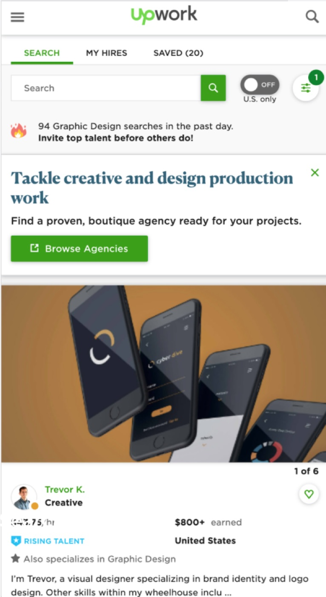
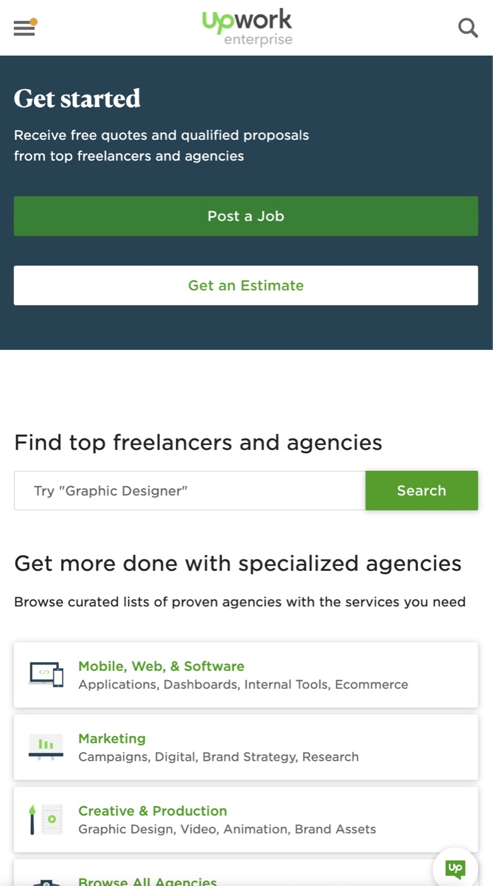
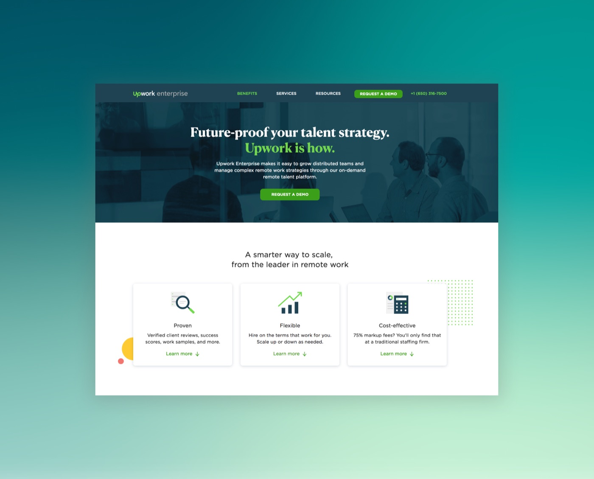
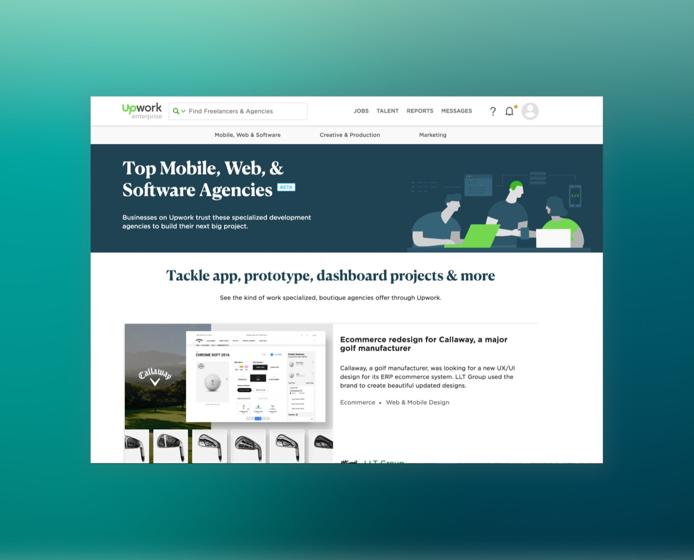
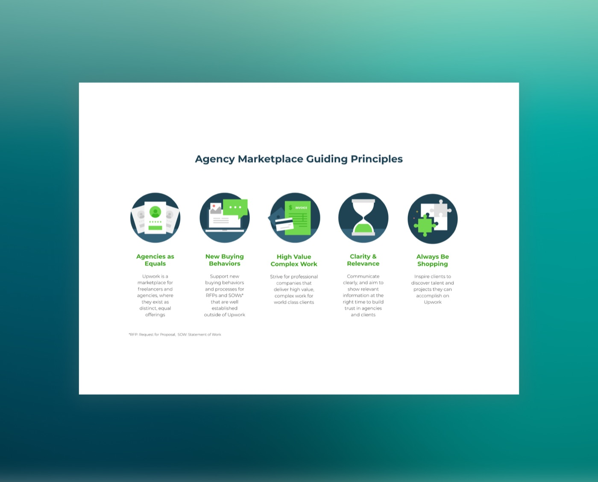

Scott Dickie
Scott Dickie
Expanding upmarket for IPO
Upwork shifted from a marketplace for small gigs to a place to complete large, complex projects. The agency marketplace allows clients to find and hire boutique agencies on Upwork. I led the overall design strategy across the company and partnered with cross-functional teams to ensure high quality and on-time delivery. I worked with product and engineering partners to prioritize our efforts to ensure our customers needs were being met and managed a team of 3 designers through the 6 month project.






Challenges
There were several problems we identified both for clients and agencies. First, Upwork is perceived as a place for small, low-priced gigs and clients were unaware that Upwork had qualified agencies on the platform and agencies were not aware that Upwork is a place to find work.
Secondly, clients were hiring agencies accidentally because agencies were represented too similarly to freelancers. This created frustration and confusion as clients would hire an agency but expect an individual freelancer to work on their project.
Thirdly, the agency supply currently on Upwork did not meet the demands of the clients who needed an agency for their project.
Solutions
1. Many teams have tried to redesign the agency experience in the past, so our team wanted to bring a new, fresh perspective. This included collaborating with cross-functional teams at the beginning of the project, defining a minimum lovable product that would delight agencies and clients, and learning throughout the project with qualitative and quantitative learning.
Solution
- Global navigation redesign to improve searches and add ‘agency’ terminology
- Search results enhanced to include agency filters and new agency search results
- Storefront pages to merchandise the best agencies on Upwork
- Redesign agency profile to highlight a broader range of services and information
- New illustrations and design system components to support agency use cases and visualizations
Results
- Increased agency contracts across clients of all sizes
- Increased agency search results by 25%
- Increased volume of large $ contracts with large businesses
- Reduced confusion for clients mistakenly hiring agencies